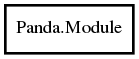

Module
Object Hierarchy:

Description:
Sequence validity checker
Namespace: Panda
Package: pandaseq-2
Content:
Constants:
Properties:
-
public int api { get; }
The API version of a module.
-
public string? args { get; }
The arguments passed on loading of a module of a module.
-
public string? description { get; }
The description of a module.
-
public string name { get; }
The name of a module.
-
public string? usage { get; }
The usage information (i.e., help text) of a module.
-
public string? version { get; }
The version of a module.
Delegates:
Static methods:
Methods: